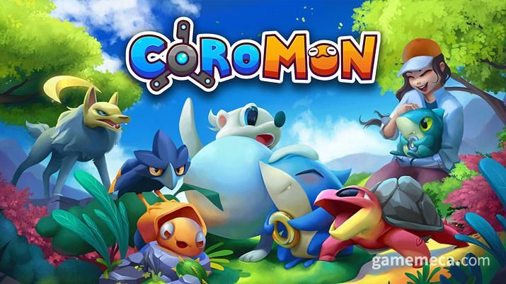
지난 1일에 출시된 코로몬에 대한 관심이 예상보다 뜨겁다. 처음엔 그저 포켓몬스터 패러디 게임 정도로 여겨졌으나, 알고 보니 과거 포켓몬 향수를 자극하면서도 나름의 게임성을 바탕으로 좋은 평가를 받고 있다.
코로몬은 인디게임 개발사 TRAG소프트에서 제작한 턴제 육성 RPG로, 재작년에 데모 버전이 공개됐고 2년 만에 정식 버전이 출시됐다. 벨루아라는 지역을 배경으로 코로몬이라 불리는 야생동물을 잡고, 이들로 배틀을 벌이며 모험하는 이야기다. 독특한 디자인을 지닌 120여 종의 코로몬이 등장하며, 빙하 지역, 용암 지대, 공장, 백화점 등 여러 환경의 던전이 있다.
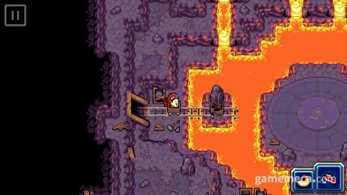
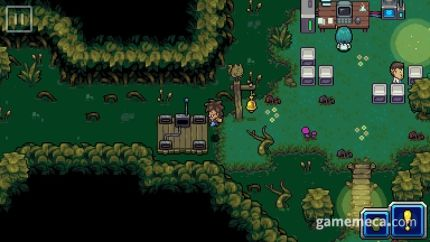
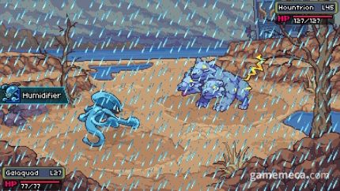
출시 후 반응은 굉장히 뜨겁다. 스팀에 등록된 953개 리뷰 중 700개 이상이 긍정적이다. 긍정적 평가 대부분은 어린 시절 게임보이를 통해 2D 그래픽 포켓몬을 즐기던 시절이 생각난다는 내용이다. 실제로 몬스터를 잡으며 여러 지역을 모험하고, 각 지역 체육관을 돌파하며 악당 세력을 축출하는 등 기본적인 포맷이 포켓몬과 유사하다. 또한 포켓몬스터 타입과 비슷한 개념인 '원소' 등 여러모로 포켓몬이 연상된다.
하지만, 게임에 대한 평가는 단순한 ‘포켓몬 카피 게임’에 그치지 않는다. 이 게임만의 독자적인 시스템과 특징이 호평을 받고 있다. 포켓몬 기술 사용 횟수인 PP를 대신하는 스태미나 포인트(SP)를 활용한 배틀 시스템이 그중 하나다. 포켓몬처럼 코로몬도 공격 시 SP를 소모한다. 그런데 개체별로 최대 SP 보유량이 다르며 기술 위력이 높으면 SP가 많이, 낮으면 적게 소모된다. SP가 떨어지면 한 턴을 아예 SP 화복에 써야 하기 때문에 기술 위력과 SP 소모량을 계산해가면서 써야 하는 전략적인 묘미가 있다.
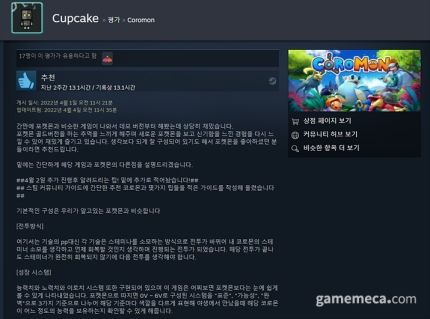
더불어 여타 포켓몬스터 시리즈에 비견해도 밀리지 않을 정도로 훌륭한 메인 스토리를 보유하고 있다. 몇몇 리뷰에선 포켓몬스터 시리즈 중 가장 스토리가 좋다고 평가되는 3세대 타이틀보다 낫다는 평이다. 아울러 스토리 모드만 30시간을 즐길 수 있을 만큼 분량도 충분한 점이 장점으로 뽑히고 있다.
이 밖에도 게임이 보기보다 세심하게 제작됐다는 점을 확인해 볼 수 있다. 특히, 포켓몬스터 시리즈에서 매번 호불호가 갈리는 노력치와 개체치가 코로몬에서는 보다 간소화돼서 누구나 능력치가 높은 코로몬을 쉽게 잡을 수 있다. 더불어 숨겨진 요소와 즐길거리도 많아 많은 팬들이 만족하며 게임을 즐기고 있다.
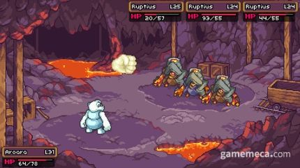
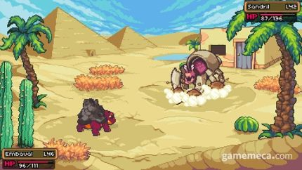
물론 단점으로 지적된 부분도 있다. 공격 애니메이션이나 대화창 등을 빠르게 스킵하는 기능이 없어 진행이 늘어진다거나, 몇몇 구간은 퍼즐이 너무 많아 피로하다는 것 등이다. 아울러 귀여운 디자인 위주인 포켓몬과 달리 코로몬은 말 그대로 몬스터에 가까운 디자인이 많다는 것도 호불호가 갈린다. 국내 유저들은 구글 번역기로 돌린 듯한 완성도가 낮은 한국어 번역 때문에 ‘부정적’ 평가를 내린 경우도 많다.
종합해보면 아직 손쓸 부분이 많은 게임이지만, 2D 포켓몬 추억을 느끼기 좋고 고유한 게임성을 갖춰 충분히 즐길 만하다는 것이 중론이다. 규모가 작은 인디게임 개발사에서 제작했다는 점도 참작의 여지가 있다. 지적된 문제를 업데이트를 통해 해소한다면, 지금은 쉽게 즐길 수 없는 고전 포켓몬 팬들의 향수를 자극할 인디게임 명작으로 거듭날 수 있으리라 전망된다.
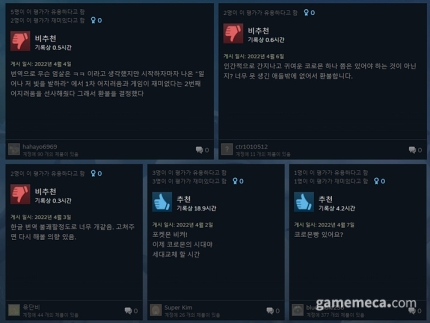
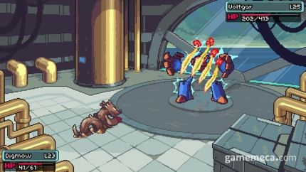
출처:
https://n.news.naver.com/sports/esports/article/356/0000053098
4월 1일에 출시한 포켓몬 패러디 게임 '코로몬'인데 갓겜이라는 평이 많습니다. 포켓몬 골드 느낌난다는 반응도 있구요. 제가 아직 오모리(플탐 16시간인데 끝이 안 보임)를 못 깨서 못 하고있습니다. 그래서 기사를 찾아서 글 올립니다.
오모리깨고 이번주에 해보고 리뷰글 써보려고 합니다!!GlitchCat
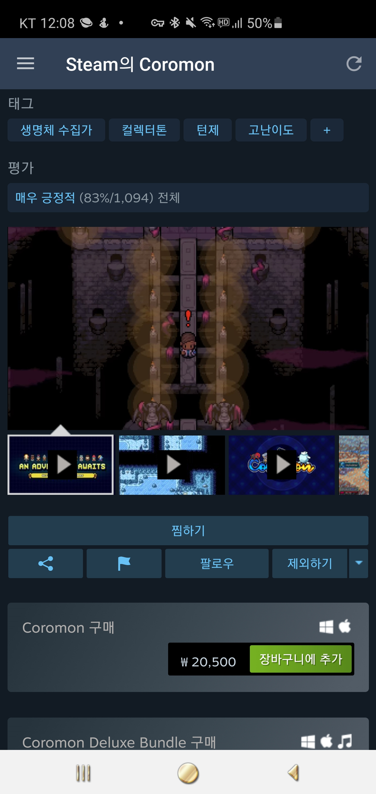
(현재 스팀에서 20500원에 판매중. 평가는 83%로 매우 긍정적입니다. 번역만 좀 더 잘 되면 떡상할 듯 합니다.)
P.s 내 안의 '코로몬'은 얘인데...
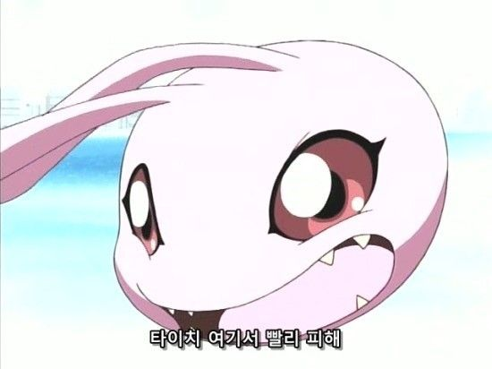
후원댓글 17개
댓글 17개 ▼